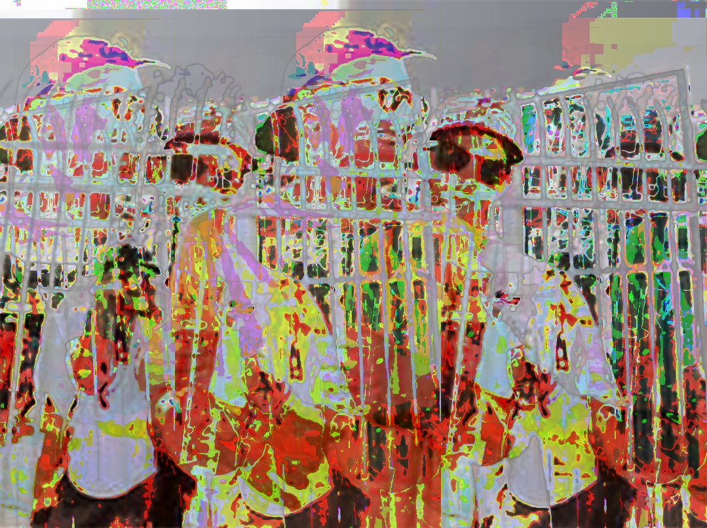

Glitch Art
Here is a glitched image by data bending with the echo effect. I really liked the color and triple image look it left. The original is the infamous picture of Tom Brady being helped to his car after the Buccaneer's Super Bowl parade. With 7 Super Bowl titles, some people say he is a "glitch" in the game.
Tom Brady, 1079 x 808, February 15, 2021